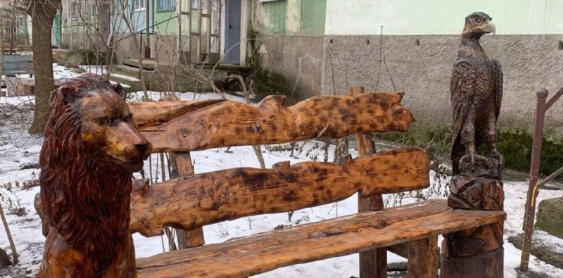
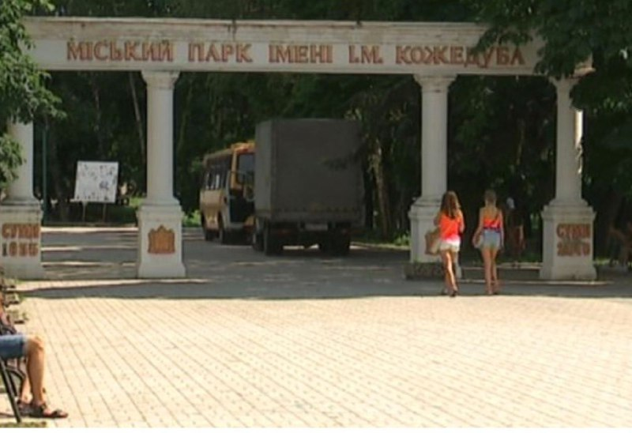
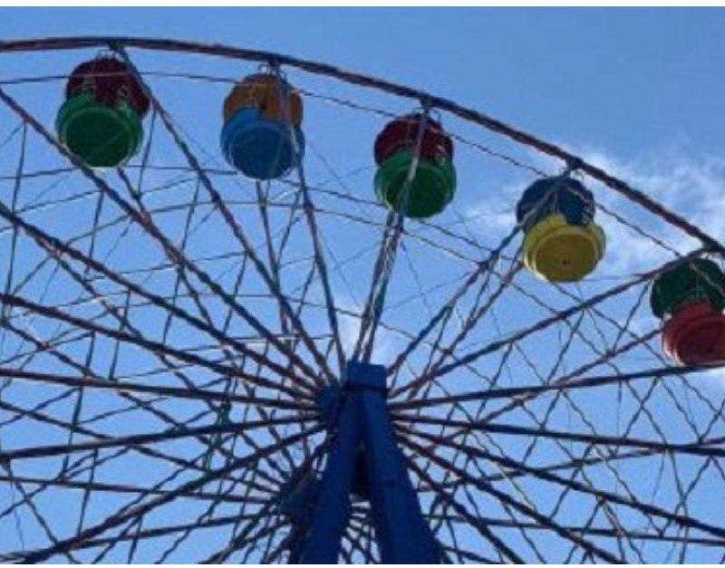
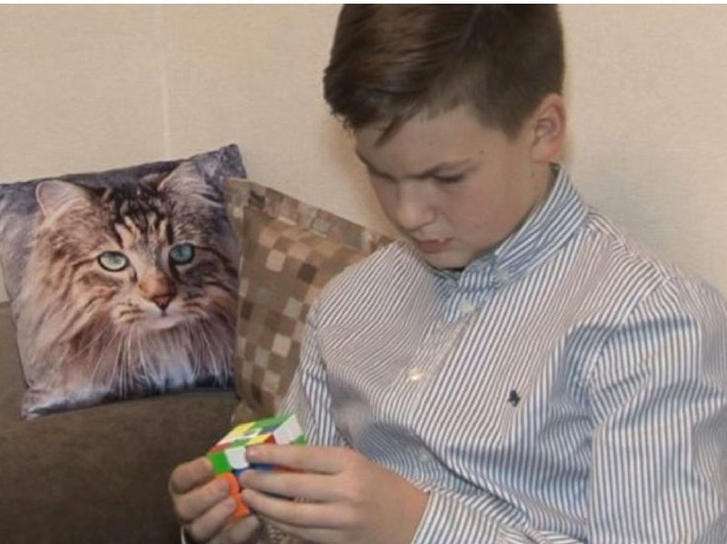

Криворіжець прикрасив майданчик біля багатоповерхівки власноруч зробленими дерев`яними скульптурами зі зламаного дерева або пенька.
Криворіжець прикрасив майданчик біля багатоповерхівки власноруч зробленими дерев`яними скульптурами.
Суспільному чоловік розповів: прикрасити майданчик біля будинку, де мешкає, вирішив рік тому. Спершу встановив паркан.
Суспільному чоловік розповів: прикрасити майданчик біля будинку, де мешкає, вирішив рік тому. Спершу встановив паркан.
Після паркану Сергій встановив на майданчику смітник, лавку та криницю.
Дерев`яні витвори криворіжець робить у своїй майстерні, біля будинку. Каже: майбутній образ з`являється в голові, коли він дивиться на деревину. А матеріал знаходить прямо на вулиці, це може бути пеньок або зламане дерево.
Читайте нас у Telegram: Суспільне Дніпро.
Урбан-парк та спортивні майданчики: у Сумах оголосили тендери на реконструкцію парку Кожедуба
Департамент капітального будівництва Сумської обласної державної адміністрації оголосив два тендери на реконструкцію об'єктів у міському парку ім. Кожедуба загальною вартістю майже 80 мільйонів гривень. Про це повідомили на сторінці управління архітектури та містобудування у Facebook.
Перший тендер - на 32 мільйони гривень - передбачає реконструкцію елементів благоустрою та малих архітектурних форм з влаштуванням Урбан-парку.
У тендерній документації передбачається облаштування тротуарів і іншого дорожнього покриття, посів газонів, встановлення урн та лавочок, МАФів. Також передбачається облаштування майданчиків для паркуру, воркауту, тенісу, йоги, будівництво памп-треку. У тендерній документації також - облаштування громадського туалету і становлення зовнішнього освітлення.
Другий тендер - на понад 46,7 мільйонів гривень - передбачає реконструкцію елементів дитячих, спортивних та інших майданчиків. У технічне завдання включені заміна покриття, встановлення урн та лавок, облаштування велопарковки. Також передбачається облаштування кортів для стріт-футболу 3х3, панна-корту, майданчиків для стрітболу та баскетболу, дитячого воркауту.
Оглядове колесо за 1 млн 700 тис. грн. У Дніпрі виставили на продаж атракціони з парку Лазаря Глоби
В інтернеті з'явилося оголошення про продаж атракціонів з парку Лазаря Глоби у Дніпрі.
За словами директора комунального підприємства «Дирекція територій об'єктів і рекреацій» Вадима Галицького, атракціони є приватною власністю, ні департамент, ні комунальне підприємство не мають права ними розпоряджатись.
На одному з сайтів оголошень 23 грудня користувач під іменем Сергій Шевцов виставив три оголошення щодо продажу атракціонів. Оглядове колесо пропонував придбати за 1 млн 700 тис. грн, автодром – майже 853 тис. грн, американські гірки – 1 млн 705 тис. грн.
Вадим Галицькийкаже: це приватна власність, на неї є відповідні документи, власник може вирішувати, що робити з атракціонами на власний розсуд.
Згідно з рішенням міськради від 22 липня 2020 року, комунальне підприємство “Парк Лазаря Глоби” як юридична особа перебуває в стані припинення. Нині парк перейшов на баланс “Дирекції територій об’єктів і рекреації”.
Черкащанин опанував 15 музичних інструментів
Черкащанин Дмитро Сивоконь опанував сопілку, дудук, діджереду, дінг та ще з десяток музичних інструментів. Тренується по декілька днів, аби знайти потрібне звучання. Про це чоловік розповів Суспільному.
Дмитро Сивоконь грає на діджеріду. Зауважив: це австралійський етнічний інструмент. Він додав: в Австралії його роблять з евкаліпту, а у нього – з пластику. Втім, зазначив, від того звучання не гірше.
"Якщо в нього сильно губами зробити, то виходить типу трембіти", – зазначив музикант.
Металеві трубки – насправді інструмент дінг, пояснив Дмитро: "Металеві трубки різної довжини і молоточок".
Дмитро захопився музикою ще зі школи. Опанував 15 інструментів. На більшості з них навчився грати самостійно, методом інтуїтивного музикування.
Черкаський школяр збирає кубик Рубіка за 16 секунд
Шестикласник з Черкас Матвій Паіс збирає кубик Рубіка за 16 секунд. Школяр розповів Суспільному, як за пів року опанував спідкубінг і навчився вирішувати складні головоломки.
Одинадцятирічний Матвій Паіс розповів, що для збирання кубика має спеціальний килим, який фіксує час:
"Коли я відпускаю руки і починаю збирати – час засікається, і коли я знов прикладаю руки – час зупиняється".
Аби вирішувати таку головоломку, варто вивчити алгоритми, зазначив школяр. Він знає 250 комбінацій:
«Алгоритм «піф-паф» спочатку робиться рух правою граню, верхня грань, потім опускаємо праву грань і вертаємо верхню. Це такий базовий найлегший алгоритм".
Матвій розповів, що середній час, за який зараз збирає кубик — 16 секунд. Але коли починав – думав над головоломкою три дні:
"У мене не виходило нічого нормально повторювати, але за рахунок вогню, який у мене з'явився, я почав розуміти, як його вчитися збирати".